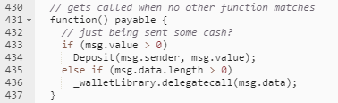

fallback function using Delegate Call
Within the parity wallet there was a default
payable function also known as a fallback function which used a delegate call into the wallet library.
Fallback
functions are called when a call is made to a contract and no function is specified while sending value to a
contract.
Using this functionality an attacker was
able to access the
fallback function and leverage the delegate call by calling the contract and NOT specifying a function but
specifying msg.data with the target and values shown in the above exploit.
Fallback functions
are often used as a catchall within contracts. We can think to them as the “default” from a switch statement or the
“else” clause in a block of logic. You will see fallback functions aid us in many attacks for example tx.origin and
reentrancy
attacks.
Parity Wallet CodeExploitable Code from the parity wallet from the
contract link:
https://etherscan.io/address/0x863df6bfa4469f3ead0be8f9f2aae51c91a907b4#code
on line 435, the code logic states that
if there is data within the transaction greater than 0 a delegate call is made which calls the wallet library in the
context of the calling contract.
Bibliography:
•
https://blog.trailofbits.com/2018/09/05/contract-upgrade-anti-patterns/•
http://console-cowboys.blogspot.com/2020/10/smart-contract-hacking-chapter-7.html